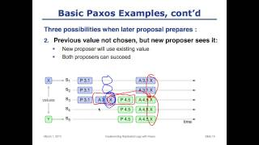

What I would change, and why it should look different.
This page is a design review of the current HTML workstation prototype, not a rewrite of the Svelte app. The zinc palette, the real thumbnails, Home as a start screen, and Queue as a working list are already right. The problems below are the places where the mock still advertises itself instead of behaving like a desktop product. Each pair is the same screen twice: left is what you have now, right is the change I am asking for. The numbered markers sit on the actual chrome, not on a written list that you have to map back yourself.
Current chrome: / · Proposal 1: /p1.html · Proposal 13: /p13.html · This review: /proposals.html1. Stop navigating in three places at once
Built. Quiet navigation lives in Proposal 1. Home empty → analyzed lives in Proposal 13. Open Proposal 1 · Compare with current chrome
Right now the sidebar, the breadcrumb, and the ⌘1 ⌘2 ⌘3 pills all tell you which screen you are on.
On empty Home those pills sit in the title bar and compete with Analyze, which is the only action that matters.
A desktop app picks one nav. Shortcuts still exist. They live in the menu bar, in tooltips, and in the user’s hands, not as a second dock painted into the window.
Breadcrumbs are for nested documents. Home, Queue, Downloads, and Settings are peers. They do not need a trail.
Current
- 1The breadcrumb restates the sidebar. It is not a location inside a document.
- 2Shortcut pills are a second nav, and they are almost as bright as Analyze.
- 3Active Home also glows. Three “you are here” signals in one glance.
Proposed
- 1The title bar can name the screen once, like a window title. No trail.
- 2Pills are gone. ⌘1 still works. It does not need a billboard.
- 3Active nav is a quiet fill. Analyze is now the brightest control in the window.
2. Queue is work. Downloads is the library.
The completed Rust video, with Open, Show in Finder, and Conflict sitting on the same list as a merge at 88%, is Downloads wearing a Queue costume. Clear Completed exists because the list is already confused about what it is for. In a product I would ship, Queue only holds jobs that still need the machine: downloading, merging, paused, failed, or waiting on a name. The moment a file is on disk, it leaves Queue and appears in Downloads. Conflict is not a third button on a finished row. It is a stop. The row should look wrong, and the dialog should already be the next step. Open as a primary button is correct in Downloads. It is not correct next to a job that is still supposed to be work.
Current
Active Queue
● 24.6 MB/s (2 slots occupied)

- 1A header total that the backend does not emit. Per-job speed is real. This number is theater unless you sum active jobs.
- 2Clear Completed admits finished files are living in the wrong list.
- 3A completed row with Open, Finder, and Conflict. That is the Downloads inspector, parked in Queue.
Proposed
Queue

- 1The page is called Queue. Speed lives on the job, and in the status bar only while bytes are moving.
- 2No Clear Completed. Finished work is not here to clear.
- 3A conflict is a blocked job, not a trophy button on a completed file. Choose a name, or cancel.
3. One selection language. Almost no glow.
In the current prototype, almost everything that is “on” gets a blue aura: the sidebar item, the shortcut pill, the format card, the policy card, the download row. In a generated mock that reads as premium. In a real workstation it reads as every control shouting. I would keep glow for two cases only: keyboard focus, and the one job that is actually transferring bytes. Active nav can be a quiet fill. A selected row can be a slightly lighter background. The primary button stays solid blue. Secondary actions stay border and fill, with no halo.
Current
- 1Nav glows.
- 2The chosen format also glows. Two auras, no hierarchy.
Proposed
- 1Nav is a fill. No halo.
- 2The chosen format is a border and a tint. The Add to Queue button, not shown here, is the only solid blue in the region.
4. The status bar should be boring until something is happening
Empty Home still claims Live 14.8 MB/s and 2/2 slots. The sidebar has a green FFmpeg trophy. The footer also says the engine is ready. The folder path is in the footer and again on every save bar. That is a dashboard glued onto chrome. A status bar should be quiet by default: the folder path, maybe a small idle mark. Engine health belongs in Settings, and should only come forward if FFmpeg is missing. Speed and slots should appear while something is downloading, and disappear when the queue is idle. The green 24.6 MB/s next to Active Queue is the same idea. Per-job speed is already computed from a rolling bytes window. A header total would be a sum of those jobs, and only worth showing when at least one job is moving.
Current, on an idle Home
- 1Live speed on a screen where nothing is downloading. People learn to ignore it.
- 2FFmpeg Ready is a trophy. If it is always true, do not show it. If it is false, it is an alert.
Proposed, same idle Home
- 1Path stays. Idle is enough. When a job is transferring, this same corner becomes 18.4 MB/s · 2 slots, which is a real sum of active jobs.
5. Empty Home is right. The chips and the extra Paste are not.
Centered URL bar and dropzone is the correct empty state. That is how an empty desktop tool should feel: one place to put a link, one obvious action. The four pills under the dropzone are a landing page. “Single Video Analysis” and “Playlists up to 500 items” exist so this prototype can jump to other screens. In the product they are not controls. If you want a way to try the app, label them as samples. Do not dress them as features. Paste from Clipboard ⌘V is leftover from the web. On the desktop, paste is already the OS. I would keep Analyze and drop the extra Paste, or shrink it to a small icon for people who do not think to hit ⌘V. As soon as a URL has been analyzed, Home should stop being a hero. The URL bar becomes a toolbar at the top, the video or playlist top-aligns like Queue, and the mode follows the URL. One link, a playlist, or a handful of links. The user should not have to declare Single versus Batch after the app already knows.
Current
- 1A second Paste, labeled with a shortcut the OS already owns.
- 2Feature chips. They demo the prototype. They are not a product surface.
Proposed
- 1Analyze is the only button in the bar. Paste is ⌘V.
- 2No marketing chips. The daily line can stay if it is real. It is a quiet fact, not a feature list.
6. Lock type and buttons to a system
The current file mixes a 22px page title that feels like a landing page, 13px body, 11px meta, 10px badges, 22px title-bar pills, 26px chips, 32px buttons, and 36px nav. That is too many heights for one window. I would bring page titles down to about 17 or 18px semibold, keep body at 13, meta at 11 or 12, and put a mono font only on paths. Controls: 28px as the default, 24px for compact chips and filters. The shipped app already uses Geist. Inter from Google Fonts is fine for this HTML file, and it should not survive into product. Button hierarchy matters as much as size. One primary per region. Secondary as ghost or outline. Destructive as red text, not a red fill, unless you are about to delete.
Current sizes, all in one place
Proposed: two control heights, quieter title
7. Queue and Downloads should share one list pattern
Downloads already has the right shape: select a row, details on the right. Prototype Queue is still a stack of self-contained cards, even though the real Queue already has an inspector. Two information architectures in one product will always feel slightly broken. Nested playlists also get tall fast if every child is a full card. Selection plus inspector scales. Cards with everything inside look great at three items and fall apart at thirty.
Current Queue: every card is a whole story

- 1Actions, progress, path, and children all live in the row. There is no selected item. There is no place for detail to go except “make the card taller.”
Proposed Queue: same master-detail as Downloads

- 1The list is for scanning. Rows stay short.
- 2The inspector is for acting. Pause, cancel, speed, ETA, output path. Same pattern as Downloads, so switching pages does not switch mental models.
8. Empty states should rhyme. Filled states start at the top.
Empty Home is centered because there is nothing to scan. That is correct, and I would keep it. Empty Queue and empty Downloads should be centered the same way, with a short sentence and a way to add work. Any view that has content starts from the top, with the same padding, and a title that is a label rather than a billboard. That is why Home and Queue felt like different products. It was not that centering is wrong. It was that only one empty view got the empty treatment.
Current empty Queue would look like this
Active Queue
A title, a hole, and buttons for work that does not exist.
- 1Top-aligned emptiness. Pause All and Clear Completed on a list with zero jobs.
Proposed empty Queue
- 1Same optical middle as empty Home. A sentence, one way forward, no ghost toolbars.
Conflict: unique name or cancel. Not replace.
The JPEG mock invented Replace existing file. The live app will not overwrite. A unique name keeps both files. Cancel drops the job. Teaching Replace in this prototype trains the wrong rule, even if the rest of the window looks finished.
Current dialog
Destination file exists
- 1Replace is in the JPEG. It is not in the product. Showing it here is a lie.
Proposed dialog
distributed_systems.mp4 already exists
- 1Two choices. The recommended one is selected. Overwrite is not a choice.
9. Give pages a measure
Your notes from the prototype. The diagnosis is the same in all three: the window is a 1376px workstation, and every filled page is stretching to fill the main pane. Empty Home is the only view that still has a sensible content width.
Kept as written. Later comments on this topic are in proposal 10.
Proposed solution
- Empty Home stays centered and capped. The URL bar around 780px is the start screen. The gutters inside the window are leftover main-pane, not a bug. Do not stretch that field to fill the pane. The black letterboxing around the whole 1376px frame is only this HTML preview; it goes away in the real desktop window.
- Analyzed Home, Settings, and About get a measure, then top-align. Same ~640–780px column as the empty bar. Label, path, and Change stay together. Format choices become a compact row or a short list, not four full-bleed posters. Analyze should feel like the same room getting a decision, not a different layout language.
- Queue and Downloads keep the width. They have a list, nested work, and an inspector. They earn the canvas. Settings and About do not.
Current · empty Home
- 1Those side gaps are the 780px bar sitting in an 1180px pane. Keep them. Stretching the field would make the start screen worse.
Proposed · empty Home
- 1No change to empty Home. The bar stays capped and centered. Analyze remains the loud control.
Current · Settings / About
- 1Label on the left, Change on the far right, a dead sea in the middle. About has even less to fill that trip.
Proposed · Settings / About
- 1A 560–640px column, still top-aligned. Path and button stay attached to the label. Unused pane stays unused.
Current · analyzed Home
- 1The URL bar goes full bleed. A 50-character link in an 1100px field.
- 2Four format posters for two lines of type each. Home stops being a start screen and becomes a dashboard.
Proposed · analyzed Home
- 1Top-aligned, same width as the empty bar. Paste is ⌘V. Analyze stays primary.
- 2Formats in a compact 2×2, not four billboards. Add to Queue would sit at the end of this column.
10. Follow-up: two-up settings, and Home that knows playlists
Follows proposal 9. That proposal is unchanged. This one answers the next two comments. Home layout is revised again in proposal 11.
Your comments
- Settings / About: can we fit two entries per line, so we make better use of the space?
- Propose better things for Home (empty → analyzed). Remember, links can include playlists too.
Proposed solution
- Settings and About: two complete cells per row. Each tile owns its label and its control. Nothing rides the far edge of the window. About uses the same grid: Version | Engine, Platform | License. This replaces the single narrow column from proposal 9 for those two pages only.
- Empty Home is still the centered bar from proposal 9. After Analyze, that bar becomes a toolbar at the same width. The URL decides the type: one video, a playlist, or a handful of links. No Single / Batch toggle.
- A video gets identity, compact formats, Add to Queue. A playlist gets the same toolbar, a playlist pill, a selectable list that may grow taller, one shared policy row, and Admit N. The room stays Home. The list is allowed to get long. The chrome is not allowed to become a different product.
From proposal 9 · one column
- 1Proposal 9’s answer: constrain the form. You asked to use the leftover width instead of leaving it empty.
This follow-up · two per line
- 1Two complete cells per row. Label and control live in the same tile. About: Version | Engine, Platform | License.
Current · analyzed video
- 1Proposal 9 already said: stop going full bleed. This follow-up says what sits under the bar when the URL is one video.
This follow-up · analyzed video
- 1Same bar as empty Home. The URL already told us this is one video. No mode switch.
Current · analyzed playlist

- 1Full-bleed mosaic, search, range, and a long card stack. Same explosion as the single-video page, with more chrome on top.
- 2Three policy posters across the width for one choice that applies to all 24.
Proposed · analyzed playlist

- 1Same toolbar as a single video. A playlist pill, not a different page chrome.
- 2The list is allowed to get taller. Policy is one compact row for the whole collection. Search can sit as a filter on the list, not a second hero.
11. Analyzed Home stays a horizontal band
Follows proposal 10. Proposals 9 and 10 stay as written. This revises only the Home empty → analyzed shape. Later comments on this topic are in proposal 12.
Your comments
- I’d much rather the Home (empty → analyzed) still remain horizontally long only. Redesign accordingly.
Proposed solution
- Empty Home is unchanged from proposal 9. Centered, capped URL bar. After Analyze, do not grow a tall column under it.
- Analyzed Home is one wide, short instrument. The bar goes full width of the main pane. Directly under it, a single row uses the horizontal space: thumbnail, identity, the choices, the primary action. Two rows at most. The page does not become a scrolling document.
- A video row: thumb · title and channel · 4K / 1080 / 720 / Audio as compact segments · Add to Queue. Formats sit in a line, not a 2×2 stack.
- A playlist row: mosaic or first thumb · collection title and “24 of 24” · a horizontal strip of episode thumbs · one policy segment · Admit 24. Extra episodes scroll sideways, not down. Search, if needed, is a small filter on that strip.
- Settings 2-up from proposal 10 is untouched. This proposal is Home only.
From proposal 10 · tall column
- 1Proposal 10 stacked identity, formats, and the button down a 780px column. That is what made analyzed Home feel suddenly big.
This proposal · video as a band
- 1Full width, one row. Formats and Add to Queue sit on the same line as the title. Height barely moves from empty Home.
From proposal 10 · playlist as a stack
- 1A vertical episode list is what makes a playlist “suddenly big.” Twenty-four rows will always win against a column.
This proposal · playlist as a band
- 1Episodes run sideways. Policy and Admit sit on the same row. Clicking the strip can still open a denser picker later; it does not dump 24 rows onto Home.
12. Same bar, result attached
Follows proposal 11. Proposals 9, 10, and 11 stay as written. Settings two-up from 10, Queue width, and the quiet nav in Proposal 1 are untouched. Later comments on this topic are in proposal 13.
Empty Home and analyzed Home still do not feel like the same tool. Proposal 9 kept the 780px measure, then stacked a column of identity and format tiles under the bar. That made analyzed Home a short document. Proposal 10 put playlist episodes in that column. You rejected a tall Home, especially for playlists. Proposal 11 heard "horizontally long only" and stretched the bar across the main pane, then packed thumbnail, title, formats, and a filmstrip into one toolbar row. Height stopped exploding. The jump did not.
Three things are still wrong. The width still jumps. Empty Home is a capped bar in the middle of the pane, which you already accepted as the empty-state rhyme. Analyze in 11 turns that field into a full-bleed instrument. The gutters vanish. The field you were looking at moves. The band is also too dense to read as a video. A 36px thumb, a truncated title, four chips, and Add sit on one Finder-style row. You asked for horizontally long. You did not ask for a toolbar. The JPEG mockups and the live app both treat the result as something you can look at. 11 treated it as chrome. And the playlist filmstrip is a fake. Tiny thumbs with no titles cannot be selected. They hint at 24 episodes without letting you do anything. If Home is not the place to pick episodes, do not draw them. If it is, they need names and checkboxes, which is proposal 10 again.
Empty Home in the clickable prototype still carries the landing page that proposal 5 already called out. Paste ⌘V, a dashed dropzone, feature chips, a daily-stats pill. Analyze then deletes all of that and substitutes a different layout. The chips make the jump worse. The live product's job is simpler than any of those screens. Paste a URL, identify it, pick a format, queue it. For a playlist the shipped Home currently also dumps every episode into a selectable list, which is why analyzed Home in the real window becomes a document. Queue already has nested playlist rows. Home does not need to preview the collection as a list.
I looked at making analyzed a bit wider than empty, at putting format next to Analyze in the URL row, and at a single default with a chevron. Wider still moves the field. Format in the URL row fights Analyze. A chevron hides the other qualities you actually choose between. The attached row keeps the bar still and puts the decision on the thing you just identified.
Your comments
- Still not happy with the Home section (empty, Analysed). How can we improve this?
Proposed solution
- Empty and analyzed share one measure. The empty-state bar stays about 780px, centered. After Analyze, that field does not jump to the window width and does not grow into a column. A compact result attaches under it at the same width. The pair stays in the middle of the pane. Drop, chips, Paste ⌘V, and the daily-stats pill leave the empty story. The bar is the start screen. Drop can still land on the pane without a dashed marketing well.
- A video docks as one short row. Readable 16:9 thumb, title plus channel and duration, format as a segmented control (4K / 1080 / 720 / Audio), primary Add to Queue. Budget about 56 to 72px under the bar. Not four posters. Not the live radio list of every resolution. Not a full-page detail.
- A playlist docks as identity, not a list. Collection thumb, title, "24 videos", one shared policy segment, Admit 24. No episode stack and no filmstrip on Home. Home answers what this collection is. Episodes belong in Queue after admit, where nested rows already exist. Picking a subset is Queue work, not a second Home layout.
- A batch of URLs docks the same way. "4 ready · 1 duplicate ignored", the same policy segment, Admit 4. The line editor is how you paste. It is not a split dashboard of metrics cards after review.
- This does not change Settings, Queue, or nav. Settings two-up from proposal 10 stays. Queue and Downloads keep the width. Proposal 1's quiet sidebar is untouched. Destination conflicts stay rename or cancel. No Dashboard, no Library, no overwrite.
Current · empty Home still a landing page
- 1A second Paste, labeled with a shortcut the OS already owns.
- 2Feature chips and a drop well. They demo the prototype. They vanish on Analyze, which is why empty and analyzed feel like different products.
This proposal · empty is the bar
- 1Same centered 780px bar as proposal 9. Analyze is the only control. No chips, no extra Paste, no dashed well.
From proposal 11 · video as a full-bleed band
- 1The bar left the 780px measure and went full pane. Identity, formats, and Add share one cramped toolbar. Height is right. Width and density are not.
This proposal · video docks under the same bar
- 1Same width as empty. The thumb is large enough to recognize. Formats are a segment, not posters. Add sits on the result, not in the URL row.
From proposal 11 · playlist filmstrip
- 1Four mute thumbs standing in for 24 videos. You cannot read titles. You cannot deselect. It is a list that pretends not to be a list.
This proposal · playlist is a collection
- 1One collection, one policy, Admit. No filmstrip. No 24-row dump. Episodes show up in Queue after they are admitted.
Current · batch as a dashboard
- 1The JPEG batch composer is a second product. Split editor, validation cards, policy posters. Home should not grow a dashboard because you pasted four links.
This proposal · batch docks like a playlist
- 1Count, policy, Admit. The textarea is how those four URLs arrived. It is not the analyzed layout.
13. Home confirms, then commits
Follows proposal 12. Proposals 9 through 12 stay as written. This is a product decision, not another box width.
Built. Empty Home, Analyze, confirmation card, playlist Choose videos, batch, and Add are a clickable app with motion. Open Proposal 13 · Proposal 1 nav
Empty Home and analyzed Home still feel wrong because we have been rearranging the URL bar. Column, band, dock. The bar was never the product question. Home currently does three jobs that do not belong on one screen: take a URL, prove it is the right video, and configure the download. The live app already fills the first from the clipboard and from a drop. Then Analyze opens a workstation. Identity at 72px, Video/Audio tabs, every yt-dlp plan as a radio row with a byte size, a paragraph about subtitles and chapters, a folder picker, and for a playlist a search box, a range, and every episode. Empty is a field. Analyzed is a studio. No strip will hold a studio. That is why 11 became a toolbar and 12 became a sticky note.
There are two Homes in the repo. The shipped window puts the field at the top of the pane, always. The welcome line sits quietly in the leftover space. That is correct empty chrome. It matches Queue and Downloads, where tools stay put. The prototype and the JPEG mockups put a 680px hero in the middle of the void, then a mode pill, a dashed well, feature chips, and a daily-stats pill. Proposal 9 kept that hero and capped it at 780px. Every later Home proposal inherited a search-engine empty state inside a sidebar app. Analyzed then had to morph in place or jump. The live empty is the better empty. Steal it. Kill the chips.
The live analyzed state is the worse analyzed state. It grew because each real need (size, subtitles, a 500-item playlist, FFmpeg) landed on Home instead of in Settings or Queue. The JPEG four-poster grid is the same mistake in marketing clothes. Format is not four equal products you browse. Most people want the recommended file. Size is the reason to pick 720p over 4K, so hide the other qualities, do not delete the bytes. Subtitles, artwork, and the folder already have a home: Settings, and the status bar that already shows ~/Movies/VidStow. Repeating them on every paste trains people that Home is a form.
Playlist picking is a real job. It is not the default job. The default is "this course, all of it, 1080p, Admit." "Choose videos…" can open the list that already exists. Putting that list on every analyzed playlist is why Home becomes a document. Proposal 10 was right that a list needs names and checkboxes. It was wrong to make the list the first screen. Proposal 11's filmstrip was a list that refused to be a list.
After Add, stay on Home. Clear the card. Focus the field. A toast is enough. Batch already jumps to Queue. Single paste is a loop. Do not send someone to Queue to get them out of a layout we could not finish.
Your comments
- Think like an expert Product / UI designer
Proposed solution
- Decide the job. Home identifies what you pasted and commits it with a default. It is not the format catalog, not the subtitle inspector, and not the playlist editor.
- Empty follows the live window, not the JPEG. The field is top chrome of Home, full width of the pane, the same place before and after Analyze. A short welcome sits in the middle of the leftover space. No chips, no extra Paste, no dashed well, no Single/Batch pill floating in the canvas. Batch stays the small control already on the live bar. Drop can hit the pane without a target graphic.
- Analyzed is a confirmation card. A still you can actually recognize, about 192×108 in the real window, title and channel, one recommended quality with a size ("1080p · ~480 MB"), Add to Queue. Other qualities sit behind a control, not as four equal posters and not as the live radio novel. Folder stays in the status bar. Output extras stay Settings defaults, with one quiet line if you must show them.
- A playlist uses the same card. Collection still, "24 videos", the same recommended quality, Admit 24. "Choose videos…" is how the list appears. Range and search live on that disclosure, not on the default path.
- Horizontally long still holds. The composition is thumb left, copy and action right. The card is allowed to be about 160px tall because a readable 16:9 still is that tall. That is not a 24-row page and not a 56px toolbar. Proposal 12 obeyed "long only" too literally.
- This does not change Settings two-up, Queue width, or Proposal 1 nav. Destination conflicts stay rename or cancel.
Prototype empty · a landing page
- 1A centered hero. Analyze will have to move this field or leave a hole.
- 2Chips and a well that vanish. The live window does not do this. Empty is already a quiet line under a top field.
This proposal · field is chrome
- 1Same slot as the live analyze bar. It does not move after Analyze. The welcome is the only thing that is allowed to sit in the middle.
Live analyzed · a download studio
- 1The 72px identity is already a confirmation. Everything under it is configuration that Settings and a disclosure could own.
This proposal · a confirmation
- 1You look at the still. You accept the recommended file, or you open the other sizes. Add is the only primary. The field above did not move.
From proposal 12 · a docked toolbar
- 1The field stayed. The result cannot be read as a video. Four equal chips ask for a decision every time. No size, so the decision has no facts.
Playlist · admit, then maybe choose
- 1Same card as a single video. The list is behind Choose videos. It is not a filmstrip and not the first screen.
Leave these alone
The zinc palette, the 16:9 thumbs, nested playlist rows, Home as a start screen, and the Downloads inspector are already the product. I would not yank empty Home up to match Queue. I would not add Dashboard, Library, or any of the hallucinated JPEG nav. If there is only one pass after this review, do it in this order: strip the self-advertising chrome, split Queue from Downloads for real, quiet the glow, then lock type. After that it stops looking generated and starts looking like something that could sit next to Finder.
Three places, with different jobs. Current chrome is the original prototype, crumbs and shortcut pills included. Proposal 1 is that same app with one navigation: sidebar, a window title, keyboard shortcuts that still work, no title-bar dock. Proposal 13 is Home as confirm-then-commit, with motion. This page stays the review. New comments become a new numbered proposal. Older ones stay as written.
Your comments